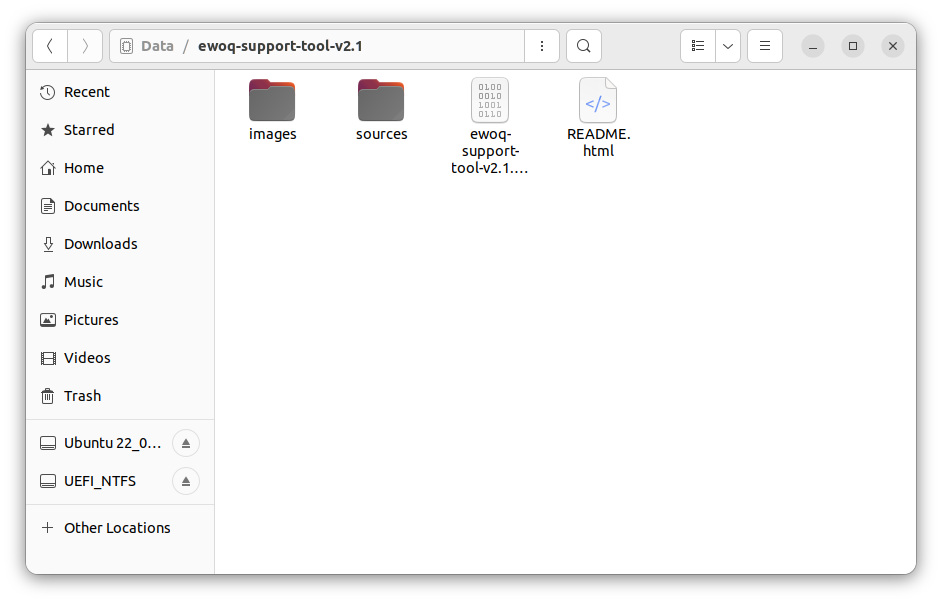
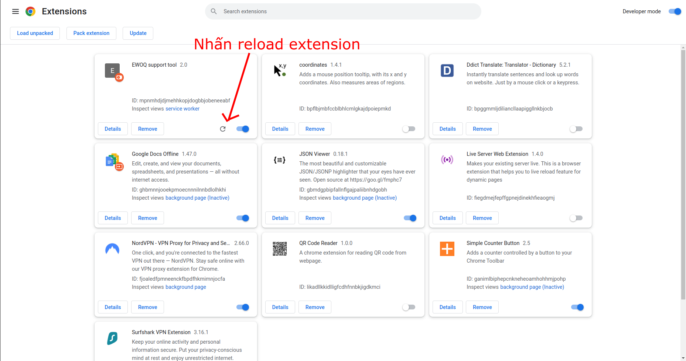
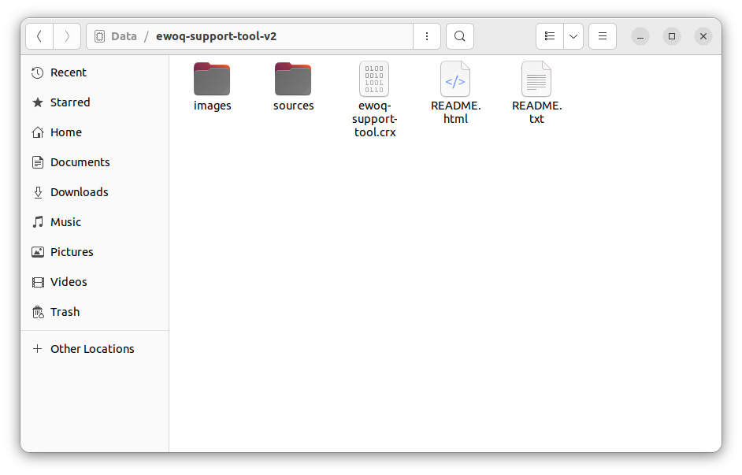
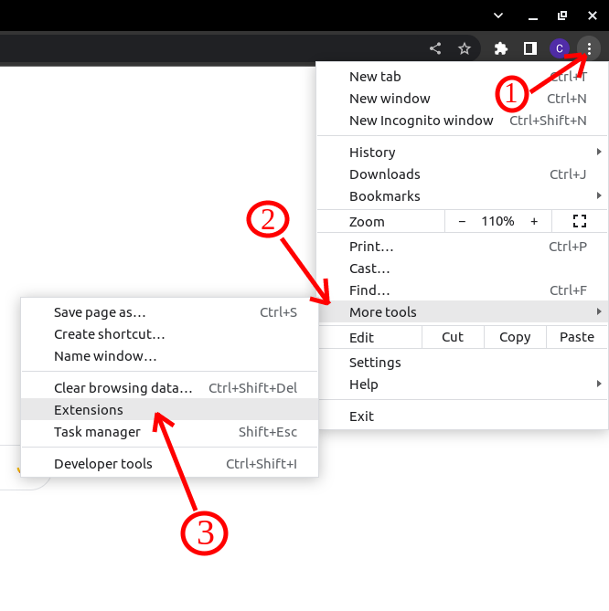
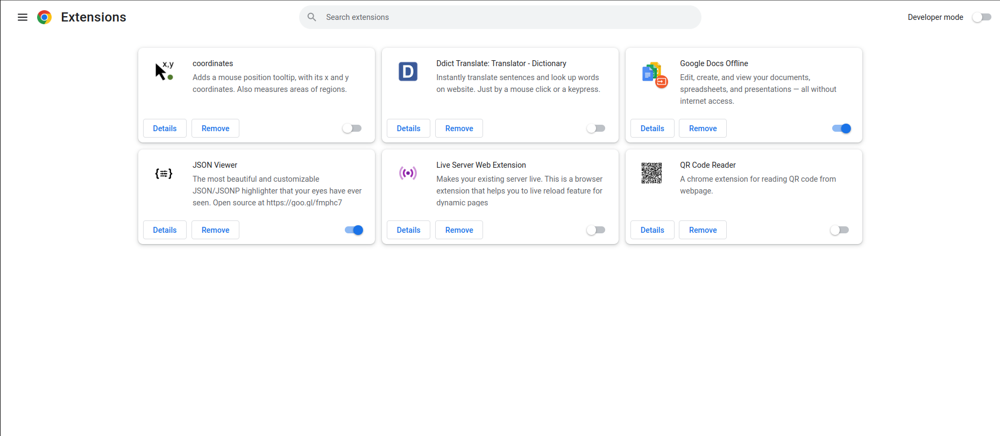
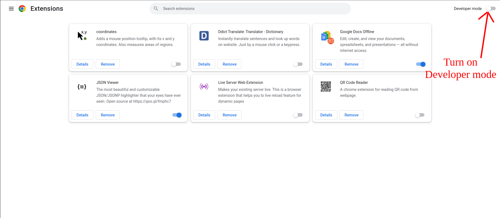
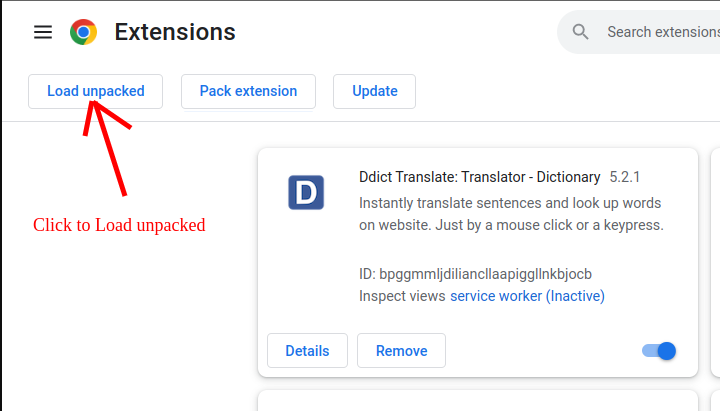
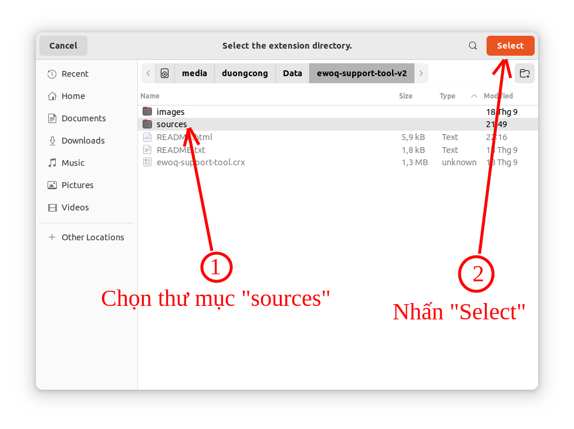
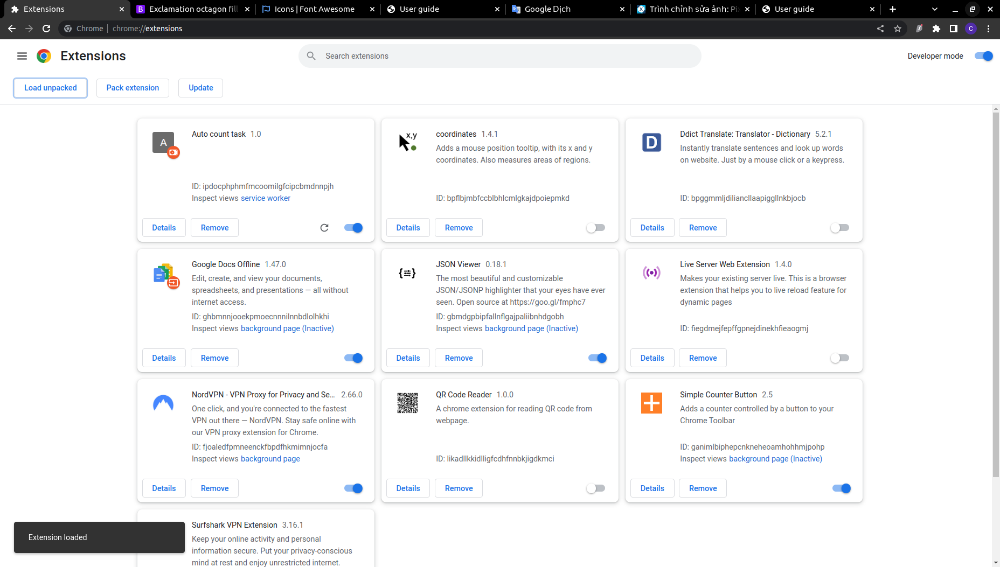

Chú ý: Bạn nên đóng trang EWOQ trước khi cài đặt hoặc cập nhật extension này.
>> Hướng dẫn cập nhật
-
Bước 1: Tải file bản cập nhật và giải nén
Tải file .zip của bản cập và giải nén được thư mục có các file như hình:
 -
Bước 2: Cập nhật
Copy tất cả các file và thư mục trong thư mục sources của phiên bản mới vừa giải nén rồi dán vào thư mục sources của phiên bản cũ đang sử dụng
>> Khi hệ thống hỏi, hãy chọn ghi đè/replace để sử dụng các file mới. -
Bước 3: Reload extension
Vào trang quản lý extensions của chrom và ấn reload lại.

More tools->Extensions hoặc Công cụ khác-> Tiện ích mở rộng -
Bước 4: Xong!!!
>> Hướng dẫn cài đặt
Cài đặt thủ công
-
Bước 1: Tải file và giải nén
Tải file .zip và giải nén được thư mục có các file như hình:
 -
Bước 2: Mở trang quản lý extensions
- Mở menu của chrome
- Mở trang quản lý extensions
+ (Tiếng anh): More tools -> Extensions
+ (Tiếng việt): Công cụ khác -> Tiện ích mở rộng
- Trang quản lý extensions:
 -
Bước 3: Bật chế độ Developer mode (Chế độ dành cho nhà phát triển)
 -
Bước 4: Cài đặt extension
- Chọn tải tiện ích đã giải nén (Load unpacked)
- Chọn thư mục "sources" và cài đặt
- Cài extension thành công
2. Cài trên Mac, Linux,...
- Kéo thả file "auto-count-extension.crx" vào cửa sổ trang quan Quản lý extensions vừa mở

- Nhấn đồng ý cài đặt etension

- Cài extension thành công

-
Bước 4: Xong, sử dụng thôi:))
1. C thể nhấp chuột phải vào icon của extension rồi chọn User guide từ menu để mở trang hướng dẫn sử dụng.
2. Có thể nhấp chuột phải vào icon của extension để mở menu bật/tắt nhanh
3. Hoặc có thể nhấp chuột phải vào icon của extension rồi chọn Options từ menu để mở trang cài đặt các chức năng khác.